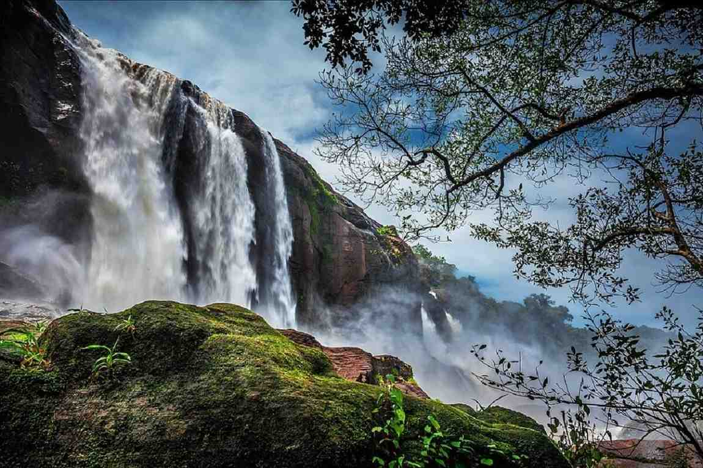

ATHIRAPALLY FALLS
Location: Thrissur District, Kerala, India; located at the entrance to the Sholayar ranges. Best Time to Visit: Monsoon season (June to September) for the most powerful flow, or October to February for pleasant weather and scenic views. Height: Approximately 80–81.5 feet. Key Features: It is a perennial waterfall that features both a top-viewpoint and a popular trek trail leading to the base. Accessibility: Located roughly 41 km from Cochin International Airport and 31 km from Chalakudy railway station/bus stand. Nearby Attractions: Close to the smaller Charpa Falls and the scenic Vazhachal Waterfalls. Biodiversity: The surrounding forest is home to endangered species, including the great hornbill and the lion-tailed macaque. Media Recognition: Known locally as "Punnagai Mannan Falls" due to it being a shooting location for the Tamil film of the same name. Wikipedia Wikipedia +3 Visitor Tips: Entry Requirements: The falls operate with designated entry timings, usually from 8:00 AM to 5:30 PM, with a nominal entry fee. Safety: The area can be slippery during rains. The trek to the bottom takes about 3 kilometers and requires reasonable fitness.

Falls are the second leading cause of unintentional injury deaths globally, causing 684,000 fatal injuries annually, primarily among adults over 60. They occur when a person comes to rest unintentionally on the ground or lower level. Risks include weak muscles, poor vision, medication side effects, and environmental hazards. High Risk Groups: Older adults (60+) suffer the most fatal falls. Over 25% of older adults fall each year. Injuries: Approximately 37.3 million falls annually are severe enough to require medical care. Common injuries include hip fractures and head injuries. Causes: Key factors include age-related balance dysfunction, muscle weakness, vision problems, and hazards like icy walkways or slippery floors. Prevention: Regular exercise (to improve strength and balance), regular eye exams, and removing home hazards (e.g., rugs) can prevent falls. |
 |
Water falls vertically without touching the bed. Cascade: Water descends over a series of rock steps. Tiered: Water drops in a series of distinct steps. Horsetail: Descending water maintains some contact with the rock face. Wikipedia Wikipedia Visitor Information Waterfalls are best visited during or just after the rainy season for maximum water flow. Many locations in hilly regions, such as those in Coonoor and Kotagiri, are accessible by road but may require short treks. Some areas, such as Tada Falls near Chennai, offer popular, easy-trekking day trips. Tripadvisor Tripadvisor +3 For the best experience, visit locations like Jog Falls during the monsoon, or enjoy the scenic, accessible, and often surrounded-by-tea-estate waterfalls of the Nilgiris district, such as Catherine Falls.
back to home